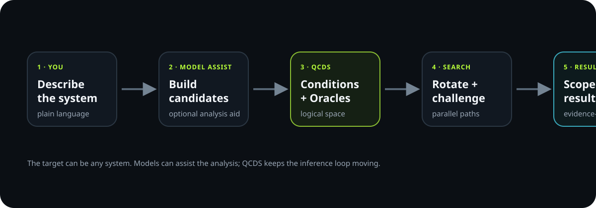
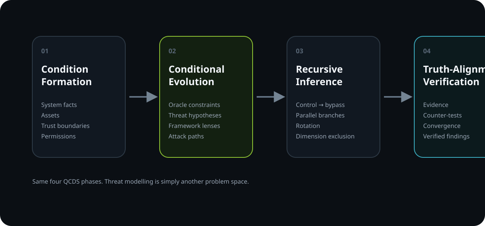
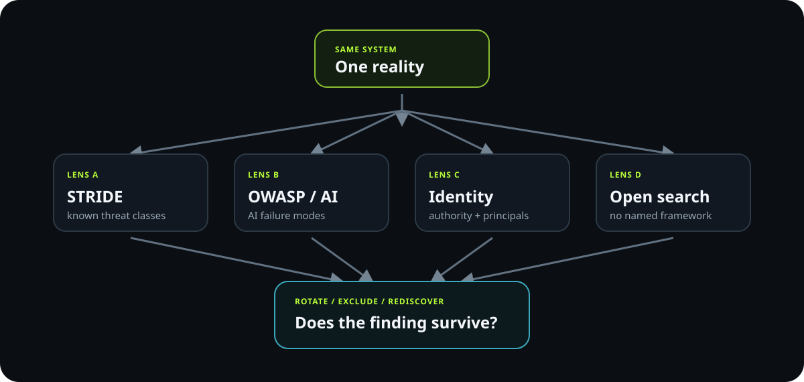

“I am the attacker. I want to ______.”
Steal data? Change a decision? Trigger an action? Break availability? Impersonate someone?
From system map to attack surface. From attack surface to vulnerability. From control to bypass. From hypothesis to verified finding.
You do not need to know threat modelling. Answer a few plain-language questions and the answers are transferred into the QCDS workbench as Conditions.

No taxonomy required. Follow the arrows first; read the details only if you want them.
The interview creates system facts. QCDS then searches and challenges possible paths instead of accepting the first answer.
Threat modelling is simply one domain mapped into Condition Formation, Conditional Evolution, Recursive Inference and Truth-Alignment Verification.

STRIDE, OWASP, identity and open search can disagree. Remove a lens and ask whether another path rediscovers the same finding.

This is the first functional QCDS Security Lab proof: a deterministic browser engine. Your answers become Conditions; perspective families generate candidate paths; Oracles challenge them; rotation checks whether findings survive without their first lens.
“I am the attacker. I want to ______.”
Steal data? Change a decision? Trigger an action? Break availability? Impersonate someone?
“How would I try?”
Input, identity, retrieval, model context, tool call, API, dependency, human approval — follow the route.
“What would stop me?”
Authentication, authorization, isolation, validation, approval, rate limits, logging, rollback or another boundary.
“How could I get around that?”
The mitigation is not the end. It becomes the next object QCDS challenges.
“What would prove this path is real?”
Architecture, code, permissions, logs, tests, reproducible behavior and counter-evidence.
The conversation is adaptive. Every answer changes the next question. The user only needs to understand the system; the AI can translate plain language into security structure.
C1External users can submit arbitrary textC2Model reads untrusted contentC3Model can prepare an external actionC4Human approval exists before sendC5Approval quality must be independently testedAnswers become explicit Conditions — the observable logical space, not the conclusion.
An Oracle is not “the answer.” It is a constraint, test or evidence function that rejects, retains, weights or narrows a candidate threat path.
External → internal, user A → user B, data → instruction, model → privileged tool.
Check identity, token scope, role, tool permissions and the exact action context.
Do not accept “we have approval” or “we validate input” without testing the failure conditions.
Code, configuration, logs, architecture, tests, reproducibility and counter-evidence.
Named frameworks feed QCDS with question families and Oracles. They do not define the edge of the search space.
Spoofing · Tampering · Repudiation · Information disclosure · Denial of service · Elevation of privilege
Prompt, retrieval, model-output, tool-use and application-boundary failure modes.
Principals, tokens, delegated authority, confused-deputy paths and privilege expansion.
Where a model decision becomes an external action with greater consequence.
Security properties, sensitive relationships, dependencies, datasets, models and services.
Remove the named framework entirely. Start from assets, permissions, attacker goals, consequences or reversed data flow.
One branch may call prompt injection the primary risk. Another may discover that excessive tool authority is the structural weakness. A third may invalidate both because authorization blocks the path.
The contradiction is not noise to average away. It is evidence to investigate.
Then run it again. Rotate the perspective. Exclude the dominant dimension. Attempt falsification. Keep the paths that survive.
This new QCDS Security Lab surface is published for evaluation and provenance. New material in this directory is reserved for commercial licensing by agreement.
No operational use, copying, modification, deployment, integration, service provision, model training, redistribution or commercialization is granted merely because the repository is public. Pre-existing QCDS material previously released under CC BY 4.0 / MIT keeps those earlier grants.